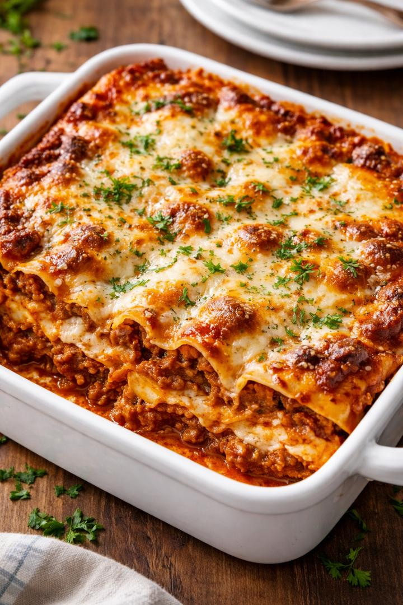

Home
Lasagna

Discription
This recipe is hands down a family favorite! I was never before comfortable with making lasagna. With this recipe, I’ve made it enough times to learn to plan time for the sauce and not cook the noodle until I’m ready to build the lasagna. LOL! Otherwise the noodle are sticky. Just rinse and you’re all set. My 25 year old son loves making it with me too. The only part that confuses us is the layering, but in the end it always tastes great!!
Ingredients
- Lasagna noodles
- Ground beef
- Marinara sauce
- Mozzarella cheese
- parmesan cheese
- Egg
- Garlic
- Olive oil
- Salt
- Black pepper
Steps
- Preheat the oven to 375°F (190°C).
- Cook the lasagna noodles according to the package instructions and set them aside.
- Heat olive oil in a pan and cook the garlic and ground beef until the beef is browned
- Add the marinara sauce to the beef and let it simmer for about 10 minutes.
- In a bowl, mix ricotta cheese, egg, salt, and pepper together.
- Spread a thin layer of meat sauce in a baking dish.
- Place a layer of lasagna noodles over the sauce
- Add a layer of the ricotta mixture, then sprinkle mozzarella cheese on top
- Repeat the layers (sauce → noodles → ricotta → mozzarella)
- Finish with mozzarella and Parmesan cheese on the top layer.
- Bake in the oven for 30 to 35 minutes until the cheese is melted and golden.
- Let the lasagna cool for 10 minutes before serving.